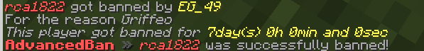
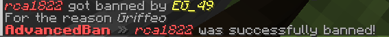
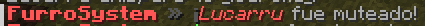

Para poder emitir penalizaciones con tiempo dentro de un servidor se va a usar este plugin, podemos dar muteos y baneos por tiempo, para esto vamos a usar el plugin llamado advanced bans
Sintaxis de comandos:
/tempban [NOMBRE] [Numero acompañado de letra] [Razón del baneo]
Banear a un jugador por cierto tiempo
- s: segundos
- m: minutos
- h: horas
- d: dias
- w: semanas
- mo: meses
Para banear al jugador Kalos durante 6 dias en el servidor por robar vamos a usar el comando:
/tempban Kalos 6d Robar no esta permitido en el servidor

/ban [NOMBRE] [Razón del baneo]
Para banear de forma permanente a un jugador

/tempmute [NOMBRE] [Numero acompañado de letra] [Razón del muteo]
Mutear a un jugador por cierto tiempo
/mute [NOMBRE] [Razón del muteo]
Mutear a un jugador de forma permanente
